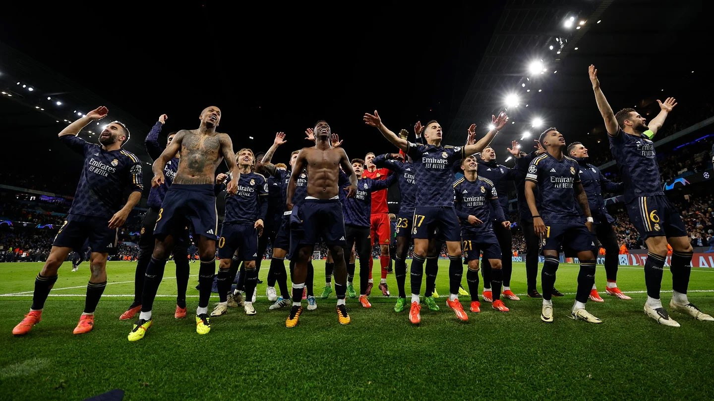

Manchester City - Real Madrid: Resultado y Resumen
El Real Madrid vencio al Manchester City por penales por los cuartos de final de Champions League
Real Madrid, amo de Etihad
Gran victoria el Madrid en busca del objetivo
El Madrid, una vez mas, sacando la casta de equipo grande. Gran merito de los dirigidos por Carlo Ancelotti, logrando asi, la primera victoria en la casa del Manchester City

Real Madrid celebrando luego de la tanda de penales
Manchester City, la gran decepcion
Los vigentes campeones pierden la corona
El Manchester City ha decepcionado, no por el resultado, sino porque ha sido una sombra de lo esperado en el Etihad. Meritazo del Real Madrid que ha defendido de 10 en toda la eliminatoria y ha hecho dano cuando le tocaba. La sensacion es que si dura 100 minutos mas el partido, hubieran empatado igual.
Erling Haaland siendo sustituido